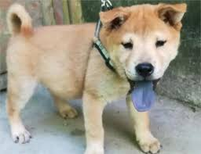

<!DOCTYPE html>
<!--AUTOGRAPHY-->
<html>

<head>
    <title>tingrutsou/title>
    <meta charset="utf-8">
    <link rel="stylesheet" href="style-l.css">
    <link rel="stylesheet" href="style-m.css" media="only screen and (min-width:600px) and (max-width:979px)">
    <link rel="stylesheet" href="style-s.css" media="only screen and (max-width:639px)">
    <link href='http://fonts.googleleapis.com/css?family=Maven+Pro:900,400' rel='stylesheet' type='text/css'>
</head>

<body>
    <div id="container">
        <div id="header">
            <div id="site">
><                <h1img src="img/柴.jpg" alt="網美柴柴  "></h1>
            </div>
            <div id="nav">
                <ul>
                    <li><a href="...">關於</a></li>
                    <li><a href="...">品種</a></li>
                    <li><a href="...">照片</a></li>
                    <li><a href="...">文章</a></li>
                </ul>
            </div>
        </div>
        <div id="headerpost">
            
            <div id="lead">
                <h2>嗨!歡迎來到柴柴圈</h2>
                <p>看到這麼可愛的柴，還能不融化嗎</p>
                <p class="data">2002年5月25日</p>
                <p class="more_s">MORE...</p></a>
            </div>
        </div>
        <div id="content">
            <div class="post">
                <a href="...">
                      
                      <h2>獸醫證實：目前查無起因</h2>
                      <p>乳糜胸主要就是胸腔積水，其積水的液體就稱乳糜，而乳糜是一種從腸道吸收來的一個淋巴液，如果積到胸腔裡頭，就會造成胸腔積水，如此肺就沒辦法擴張，動物肺部受到壓迫，等於氣球在水裡頭吹不起來</p>
                      <p class="data">2020年4月30日</p>
                      <p class="more_s">MORE...</p>
                    </a>
            </div>
            <div class="post">
                <a href="...">
                      
                      <h2>活生生萌出一道亮麗風景線</h2>
                      <p>當初，這個鏟屎官發現這三隻汪經常從陽台向外面看，看起來對外面的世界很好奇，所以，他後來乾脆在自家的外牆上開了幾個小洞，讓它們可以伸出頭看看外面的世界</p>
                      <p class="data">2018年2月12日</p>
                      <p class="more_s">MORE...</p>
                    </a>
            </div>
            <div class="post">
                <a href="...">
                      
                      <h2>訓練該注意什麼？</h2>
                      <p>小柴犬是一種比較活潑好動的犬種，如果小時候沒有將它們訓練好的話可能會變得更加的調皮搗蛋。因此對於小柴犬一定要儘早地訓練</p>
                      <p class="data">2017年12月25日</p>
                      <p class="more_s">MORE...</p>
                    </a>
            </div>
            <div class="post">
                <a href="...">
                      
                      <h2>主人誤中毒，背後原因驚人</h2>
                      <p>可能小奶狗還小， 不懂事， 見了什麼都想吃。 這不， 今天網友的媽媽買回來了好多藍莓，忘了放起來，結果就被小奶狗偷吃了， 吃完後小奶狗舌頭上都是黑紫黑紫的</p>
                      <p class="data">2018年6月11日</p>
                      <p class="more_s">MORE...</p>
                    </a>
            </div>
        </div>
        <div id="footer">
            <p>tingrutsou/p>
            <div id="iconmenu">
                <ul>
                    <li><a href="..."></a></li>
                    <li><a href="..."></a></li>
                    <li><a href="..."></a></li>
                    <li><a href="..."></a></li>
                </ul>
            </div>
            <div id="submenu">
                <ul>
                    <li><a href="...">關於我</a></li>
                    <li><a href="...">使用方式</a></li>
                    <li><a href="...">聯絡方式．</a></li>
                </ul>
            </div>
            <small>Copyright &copy; tingrutsou STREAM, all rights reserved.</small>
        </div>
    </div>
</body>